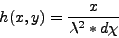
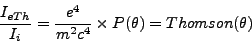
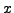
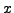

Next: Installation Up: spsim User Manual Version Previous: Output Contents
| (2.1) |
|  | (2.2) |
| (2.3) |
| (2.4) |
Then the molecular scattering factors are calculated on those coordinates, using CCP4's atomsf.lib to get the atomic scattering factors.
Assuming  atoms at positions and using , and
atoms at positions and using , and  from atomsf.lib.
from atomsf.lib.
| (2.5) |
| (2.6) |
After that the Thomson correction is applied. and  are the relative vertical and horizontal polarized parts of the beam.
That an horizontal scaterring plane and and vice versa. For unpolarized light .
are the relative vertical and horizontal polarized parts of the beam.
That an horizontal scaterring plane and and vice versa. For unpolarized light .
 is the polarization factor. is the angle between the primary beam and the direction of observation.
is the density of the scattered radiation, is the intensity of the indicent radiation,
is the polarization factor. is the angle between the primary beam and the direction of observation.
is the density of the scattered radiation, is the intensity of the indicent radiation,
 is the charge of the electron,
is the charge of the electron,  the mass of the electron and
the mass of the electron and  the speed of light.
is known as the classic electron radius.
the speed of light.
is known as the classic electron radius.
| (2.7) |
|  | (2.8) |
The Thomson correction is applied to each pixel according to it's solid angle, and then the total number of photons that arrive to each pixel is calculated.
 is the solid angle and is the pixel area projected on a plane passing through the center of the pixel and normal to the direction of observation.
is the solid angle and is the pixel area projected on a plane passing through the center of the pixel and normal to the direction of observation.
| (2.9) |
The number of photons that arrive at each pixel, is then given by:
| (2.10) |
From those pixel that arrive at each pixel only a certain number is detected. The percentage that on average is detected is known as
quantum efficiency( ) and is wavelength dependent. returns a poisson distributed number with mean .
The number of photons detected on each pixel() is then:
) and is wavelength dependent. returns a poisson distributed number with mean .
The number of photons detected on each pixel() is then:
| (2.11) |
Using  to represent the energy to produce one electron hole, the number of electrons generated on the pixel by the detected photons(
to represent the energy to produce one electron hole, the number of electrons generated on the pixel by the detected photons( is then simply:
is then simply:
| (2.12) |
Representing the maximum value output by the detector by , the binned pixels by , the pixel linear full well by exposure time by
dark current by and readout noise by  ,
the final output is then calculated by:
,
the final output is then calculated by:
| (2.13) |
Where Gaussian(x) returns a normally distributed random number with mean 0 and standard deviation x.
The noiseless output is then calculated by:
| (2.14) |
2006-09-19